Some of the more well-known submarines in the game
| Class Name | Affiliation | Ship Type | Displacement (tons)* | Link | In-Game Image | Notes |
|---|---|---|---|---|---|---|
| Los Angeles | US/NATO | Attack Submarine | 6,900 | Wikipedia |  |
62 were built to 3 main subtypes. The second and third types had VLS tubes in the bow for Tomahawk cruise missiles. A few are still are in service, but are slowly being decommissioned and replaced with Virginia class submarines. |
| Sturgeon | 4,600 | Wikipedia | 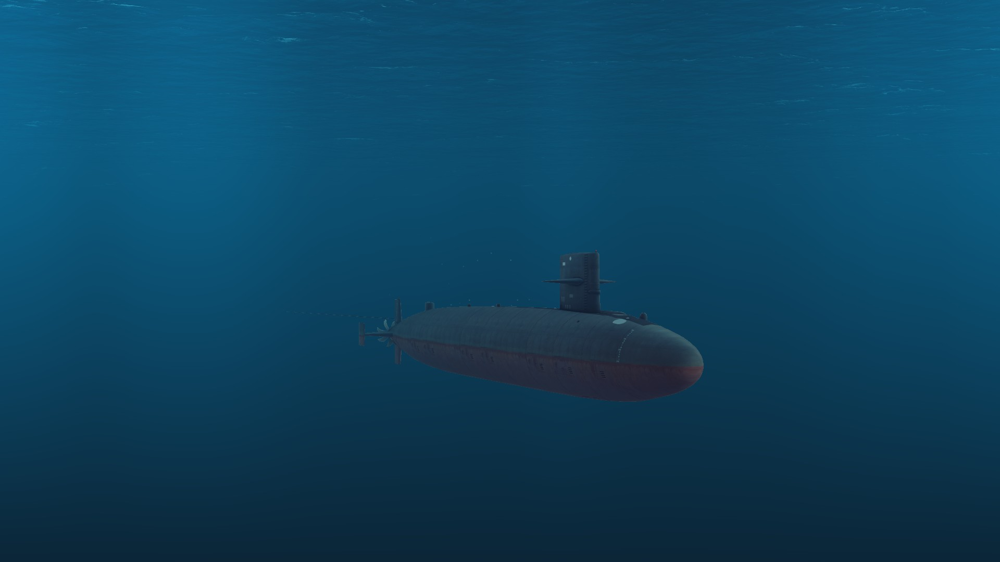 | Standard US attack submarine for most of the Cold War. Received many modifications during their service lives. | ||
| Permit | 4,300 | Wikipedia | 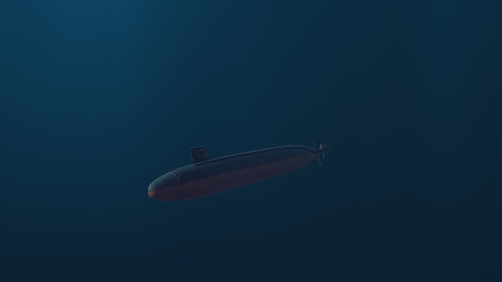 | Iterative improvement on the preceding Skipjack class, with many small improvements that optimized it's underwater speed. The lead ship, USS Thresher, was lost during diving tests. | ||
| Skipjack | 3,500 | Wikipedia | 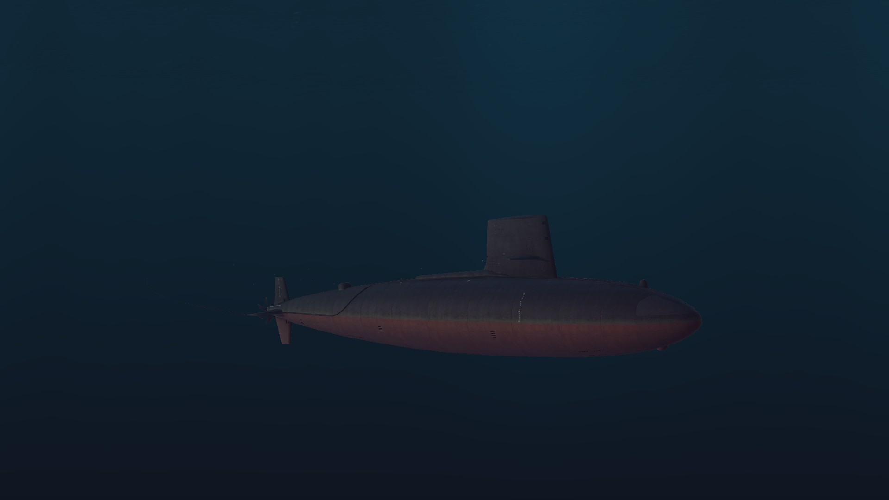 | First submarine class to use the teardrop hull, which improved underwater performance. One ship, USS Scorpion, was lost under mysterious circumstances in the mid-Atlantic. | ||
| Han | China | 5,100-5,600 | Wikipedia | 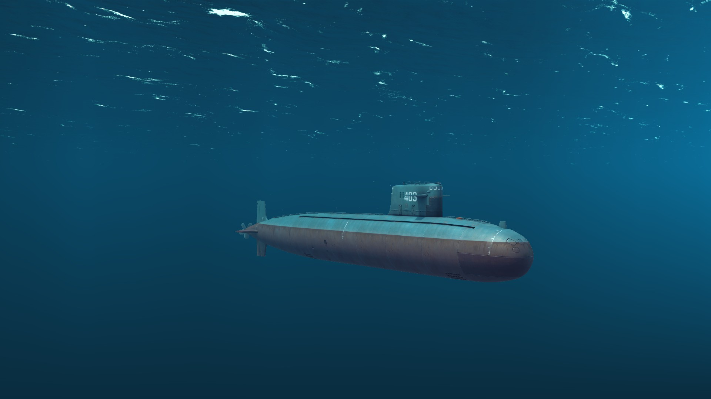 | First nuclear-powered submarine built for the PLAN and first built natively in Asia. Were somewhat louder than many other contemporary submarines in other navies, and had first-generation torpedoes. | |
| Victor III | USSR | 7,200 | Wikipedia | .jpg) |
Most advanced of the Victor type, with quieting comparable to Western nuclear submarines. Had an improved hull and a towed array, the first on a Soviet submarine. Used the advanced 65-76 wake-homing torpedo, which was intended for use against high-value targets like aircraft carriers. | |
| Victor II | 7,000 | Wikipedia |  |
A halfway point between the capabilities of the Victor I and Victor III. Improved the quieting which made them harder to detect than earlier Soviet submarines. Also used the 65-76 torpedo. Only a few were built in order to start production of the Victor IIIs. | ||
| Victor I | 7,000 | Wikipedia |  |
First variant of the Victor class. First Soviet submarines to use the teardrop hull. More capable than the earlier November class, but just as loud. | ||
| Alfa | 3,200 | Wikipedia | 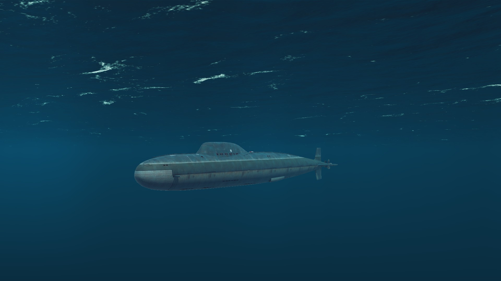 | Attack submarine with a number of experimental features, including a titanium hull, a liquid metal nuclear reactor, and high degree of automation, making them the fastest class of submarines ever built with a much safer nuclear reactor and reduced crew requirement. However their nuclear reactors couldn't be switched off which led to high maintenance requirements when in port. Built to be underwater interceptors that could outrun NATO torpedoes and therefore keep itself safe. | ||
| November | 4,750 | Wikipedia | 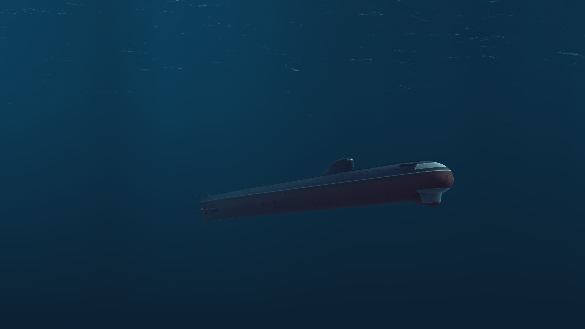 | First Soviet nuclear-powered submarine. Had a hull shape more similar to WWII submarines than later submarines, and were much noisier than comparable US nuclear submarines. Many had mechanical issues during their service, including one lost to accident and one which had a reactor failure. | ||
| Echo II | Guided Missile Submarine | 5,800 | Wikipedia |  |
Used the SS-N-3 missile, but had to surface in order to launch and guide the missiles. The dimensions and shape of the launchers on the hull made them very noisy. Some of them had upgrades that swapped the SS-N-3 for the SS-N-12. | |
| Charlie I | 4,900 | Wikipedia |  |
Built with the SS-N-7 missile instead of the SS-N-3 of previous Soviet guided missile submarines, but were intended to use the SS-N-9. Delays in the SS-N-9's development led to the SS-N-7 being used instead. They were the first Soviet ships (and possibly the first submarines in the world) able to launch missiles while submerged. | ||
| Charlie II | 5,100 | Wikipedia |  |
Slightly modified versions of the Charlie I that were slightly bigger to accomodate the SS-N-9 missile, which was more capable than the SS-N-7, and which had it's troubles in development sorted out. | ||
| Oscar | 19,400 | Wikipedia | 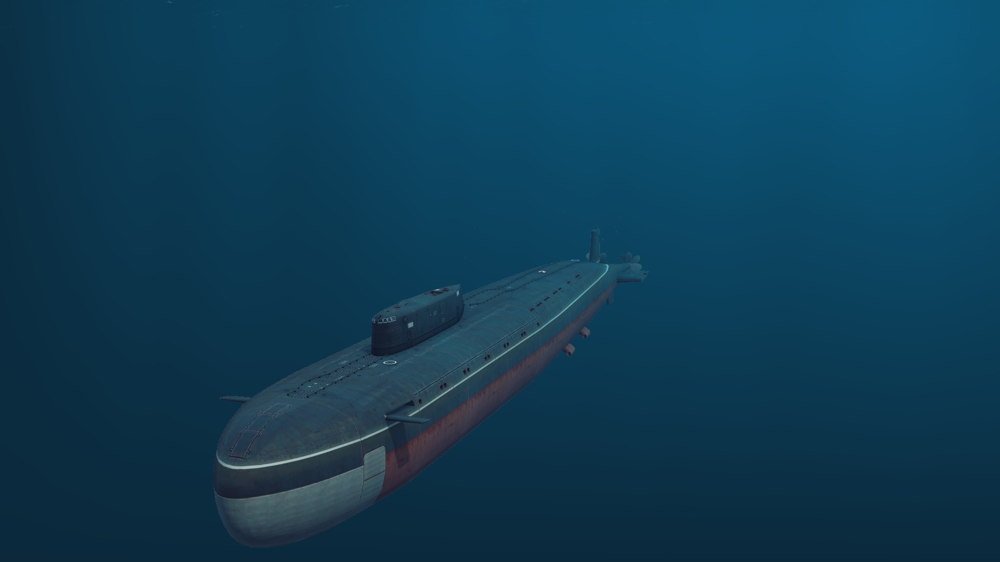 | Some of the largest submarines ever built, with only the Soviet Typhoon and Borei and US Ohio classes bigger. Carried a total of 24 SS-N-19 anti-ship missiles, the same type as are carried by the Kirov class battlecruisers and totaling 4 more than the Kirovs carry. Despite this they are still as fast as most attack submarines. One ship, the K-141 Kursk, was lost in an accident in 2000 involving a torpedo's fuel catching fire and exploding. | ||
| Asashio | Japan | Patrol Submarine | 2,150 | Wikipedia | 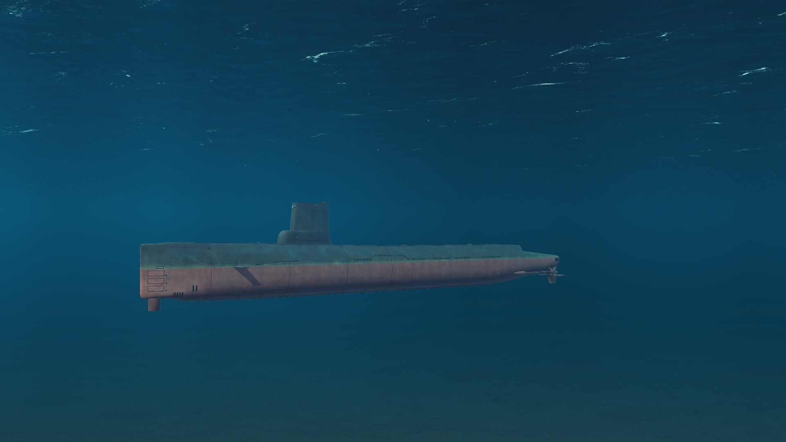 | Some of the first submarines built by Japan after WWII. A relatively older design, they had about a 20-year service life, and used older acoustic torpedoes derived from WWII and early Cold War torpedoes. |
| Uzushio | 3,600 | Wikipedia | 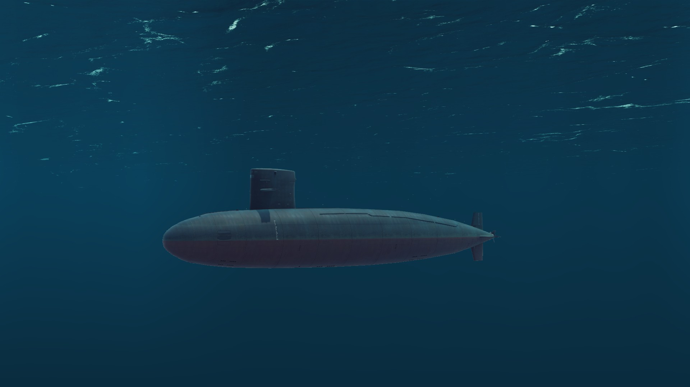 | Successor to the Asashios, first Japanese submarines to use the teardrop hull common in US and Soviet navies submarines. Used more modern and capable torpedoes. | ||
| Yushio | 2,250-2,500 | Wikipedia |  |
Iterative improvement on the Uzushio class. 10 built. | ||
| Romeo | USSR | 1,830 | Wikipedia | 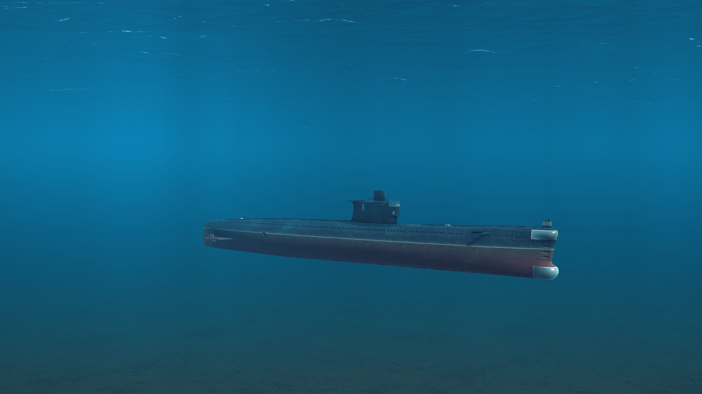 | Development of the older Whiskey class, which were themselves heavily inspired by the German Type XXI "Elektro-Boot" U-Boat. Only a handful ended up in Soviet service while the Chinese built over 80 under license. Several were sold to various navies friendly to the Soviets and Chinese throughout the Cold War. | |
| Foxtrot | 2,500 | Wikipedia | 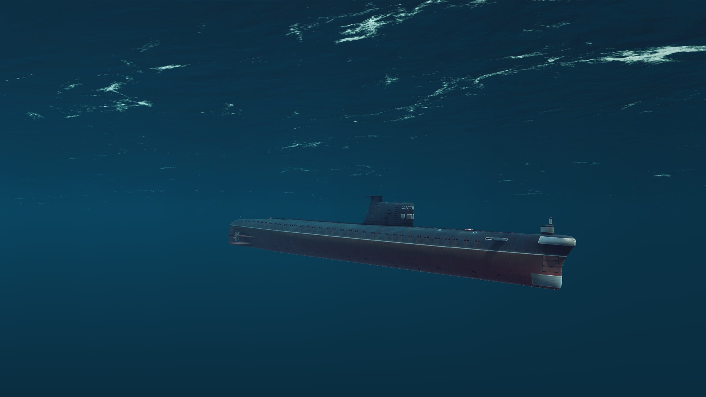 | Similar to the Romeo class, although noisier than comparable submarines. Used extensively in the Cuban Missile Crisis, with two being depth charged by US destroyers in the course of the crisis. Also sold to several other navies. | ||
| Tango | 3,800 | Wikipedia | 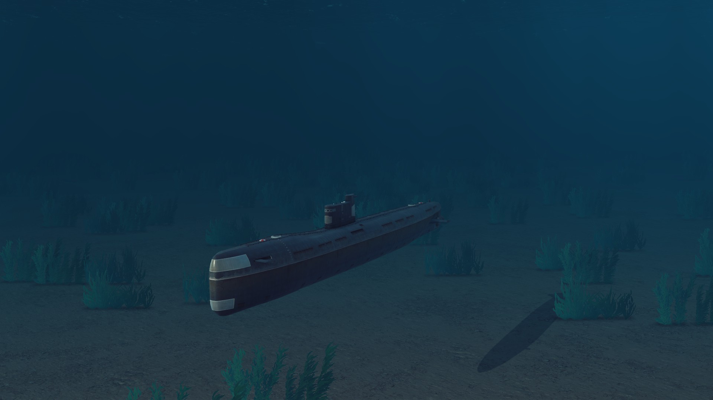 | Built with sensors from nuclear submarines and the propulsion of the Kilo class. Unlike the other Soviet diesel-electric submarines, it was never exported to other countries. | ||
| Kilo | 3,000-4,000 | Wikipedia | 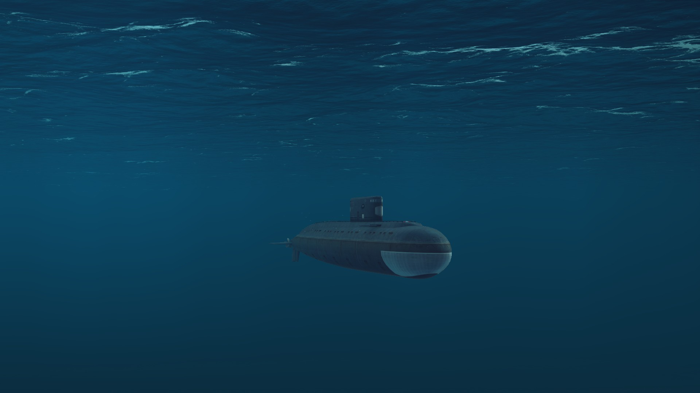 | Some of the most advanced Soviet diesel-electric submarines, with advanced quieting making it harder to detect than most nuclear or older diesel-electric submarines. Also had a more teardrop-shaped hull, the first for Soviet diesel-electric submarines. Many were sold to other navies, like many older Soviet submarines. |
*Displacement values are approximated to the nearest 10 and vary between the surfaced and submerged values for the submarine. Here the submerged value is being used. The ranges indicate different the displacement difference between subclasses